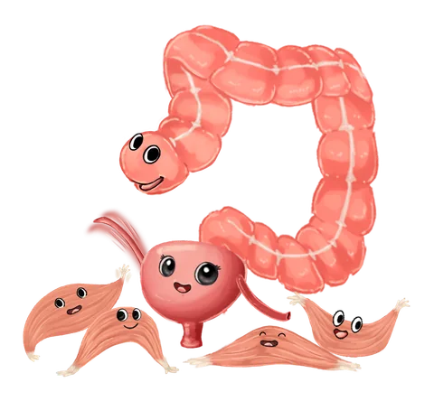
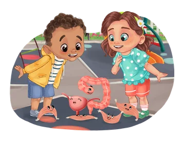
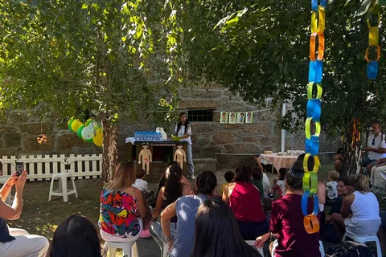

Ouvir
Reconhecer quando o corpo envia um sinal e ir logo à casa de banho.
Um livro que ensina pais e crianças a ter bons hábitos de saúde pélvica de forma simples, divertida e descomplicada.
Sobre o livro
O Bando da Barriga ajuda a falar sobre xixi, cocó e os sinais do corpo. Ensina e explica às crianças a importância de reconhecer a vontade, não adiar a ida à casa de banho e não fazer força quando estão na sanita.
Descobre o Bando
Bexiga Beli, Intestino Guto e Músculos Pupos transformam o que acontece dentro do corpo numa linguagem que as crianças conseguem compreender.

Reconhecer quando o corpo envia um sinal e ir logo à casa de banho.
Não ir sem vontade e não puxar quando sentados na sanita.
Ter em atenção à posição dos pés e dos joelhos.
Perceber que cada criança tem o seu tempo.

Uma mensagem importante
Crescer não é uma corrida. Cada criança tem o seu tempo, e aprender a ouvir o corpo é também aprender a respeitá-lo e a crescer mais forte.
Leva para casa
Disponível através da editora Caminho das Palavras, onde são realizados a compra, o pagamento e o envio.
Comprar livroSobre a autora
Fisioterapeuta e especialista em saúde pélvica, Ana Pereira criou o livro para ajudar famílias a falar destes temas cedo, com naturalidade e sem vergonha.
Ilustração
Catarina Neto é ilustradora de livros infantis e deu forma ao universo visual de O Bando da Barriga, às suas personagens e ao mundo que as rodeia.

Apresentações
O Bando da Barriga também ganha vida em escolas, bibliotecas, livrarias e outras instituições através de apresentações participativas.
Perguntas frequentes
O livro é recomendado para crianças dos 3 aos 7 anos de idade.
Pode comprar o livro diretamente no site da editora Caminho das Palavras. Comprar livro ↗
Não. Embora o foco sejam os hábitos depois do desfralde, o livro também pode acompanhar essa descoberta, ajudando as crianças a conhecer os sinais do corpo. A leitura em família permite conversar sobre estes temas ao ritmo de cada criança, sem pressas nem pressão.
Sim! As apresentações podem acontecer em escolas, bibliotecas, livrarias, associações ou noutros espaços onde haja interesse em receber O Bando da Barriga. Fale connosco para combinar uma apresentação →